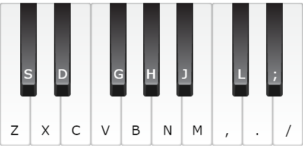

조작법
공통

Free Play 전용
방향키 ↑↓ : 악기 변경
Q : 메트로놈 On/Off
방향키 ← → : 메트로놈 BPM 변경
Record 전용
ESC : 종료
~~~~~♬Instrument List♬~~~~~
| 번호 |
English |
한국어
|
| 피아노
|
| 1 |
Acoustic Grand Piano |
그랜드 피아노
|
| 2 |
Bcenter Acoustic Piano |
브라이트 피아노
|
| 3 |
Electric Grand Piano |
전자 그랜드 피아노
|
| 4 |
Honky-tonk Piano |
홍키통크 피아노
|
| 5 |
Electric Piano 1 |
전자 피아노 1
|
| 6 |
Electric Piano 2 |
전자 피아노 2
|
| 7 |
Harpsichord |
하프시코드
|
| 8 |
Clavinet |
클라비넷
|
| Chromatic Percussion
|
| 9 |
Celesta |
첼레스타
|
| 10 |
Glockenspiel |
글로켄슈필
|
| 11 |
Music box |
뮤직박스
|
| 12 |
Vibraphone |
비브라폰
|
| 13 |
Marimba |
마림바
|
| 14 |
Xylophone |
실로폰
|
| 15 |
Tubular Bell |
튜블러 벨
|
| 16 |
Dulcimer |
덜시머
|
| Organ
|
| 17 |
Drawbar Organ |
드로우바 오르간
|
| 18 |
Percussive Organ |
퍼커시브 오르간
|
| 19 |
Rock Organ |
록 오르간
|
| 20 |
Church organ |
파이프 오르간
|
| 21 |
Reed organ |
풍금
|
| 22 |
Accordion |
아코디언
|
| 23 |
Harmonica |
하모니카
|
| 24 |
Tango Accordion |
탱고 아코디언
|
| Guitar
|
| 25 |
Acoustic Guitar (nylon) |
어쿠스틱 기타 (나일론 줄)
|
| 26 |
Acoustic Guitar (steel) |
어쿠스틱 기타 (금속 줄)
|
| 27 |
Electric Guitar (jazz) |
전기 기타(재즈)
|
| 28 |
Electric Guitar (clean) |
전기 기타 (클린)
|
| 29 |
Electric Guitar (muted) |
전기 기타 (음소거)
|
| 30 |
Overdriven Guitar |
전기 기타(오버드라이브)
|
| 31 |
Distortion Guitar |
전기 기타(디스토션)
|
| 32 |
Guitar harmonics |
기타 배음
|
| Bass
|
| 33 |
Acoustic Bass |
어쿠스틱 베이스
|
| 34 |
Electric Bass (finger) |
베이스 기타 (손가락)
|
| 35 |
Electric Bass (pick) |
베이스 기타(피크)
|
| 36 |
Fretless Bass |
무프렛 베이스 기타
|
| 37 |
Slap Bass 1 |
슬랩 베이스 1
|
| 38 |
Slap Bass 2 |
슬랩 베이스 2
|
| 39 |
Synth Bass 1 |
신스 베이스 1
|
| 40 |
Synth Bass 2 |
신스 베이스 2
|
| Strings
|
| 41 |
Violin |
바이올린
|
| 42 |
Viola |
비올라
|
| 43 |
Cello |
첼로
|
| 44 |
Double bass |
더블 베이스
|
| 45 |
Tremolo Strings |
트레몰로
|
| 46 |
Pizzicato Strings |
피치카토
|
| 47 |
Orchestral Harp |
>하프
|
| 48 |
Timpani |
팀파니
|
| Ensemble
|
| 49 |
String Ensemble 1 |
현악기 앙상블 1
|
| 50 |
String Ensemble 2 |
현악기 앙상블 2
|
| 51 |
Synth Strings 1 |
신스 현악기 1
|
| 52 |
Synth Strings 2 |
신스 현악기 2
|
| 53 |
Voice Aahs |
목소리 '아~'
|
| 54 |
Voice Oohs |
목소리 '오~'
|
| 55 |
Synth Voice |
신스 목소리
|
| 56 |
Orchestra Hit |
오케스트라 히트
|
| Brass
|
| 57 |
Trumpet |
트럼펫
|
| 58 |
Trombone |
트럼본
|
| 59 |
Tuba |
튜바
|
| 60 |
Muted Trumpet |
뮤트 트럼펫
|
| 61 |
French horn |
호른
|
| 62 |
Brass Section |
금관 섹션
|
| 63 |
Synth Brass 1 |
신스 금관 1
|
| 64 |
Synth Brass 2 |
신스 금관 2
|
| Reed
|
| 65 |
Soprano Sax |
소프라노 색소폰
|
| 66 |
Alto Sax |
알토 색소폰
|
| 67 |
Tenor Sax |
테너 색소폰
|
| 68 |
Baritone Sax |
바리톤 색소폰
|
| 69 |
Oboe |
오보에
|
| 70 |
English Horn |
잉글리시 호른
|
| 71 |
Bassoon |
바순
|
| 72 |
Clarinet |
클라리넷
|
| Pipe
|
| 73 |
Piccolo |
피콜로
|
| 74 |
Flute |
플루트
|
| 75 |
Recorder |
리코더
|
| 76 |
Pan Flute |
팬플루트
|
| 77 |
Blown Bottle |
병 부는 소리
|
| 78 |
Shakuhachi |
샤쿠하치
|
| 79 |
Whistle |
휘파람
|
| 80 |
Ocarina |
오카리나
|
| Synth Lead
|
| 81 |
Lead 1 (square) |
리드 1 구형파
|
| 82 |
Lead 2 (sawtooth) |
리드 2 (톱니파)
|
| 83 |
Lead 3 (calliope) |
리드 3 (칼리오페)
|
| 84 |
Lead 4 (chiff) |
리드 4 (치프)
|
| 85 |
Lead 5 (charang) |
리드 5 (챠랑)
|
| 86 |
Lead 6 (voice) |
리드 6 (목소리)
|
| 87 |
Lead 7 (fifths) |
리드 7 (5도)
|
| 88 |
Lead 8 (bass + lead) |
리드 8 (베이스+리드)
|
| Synth Pad
|
| 89 |
Pad 1 (new age) |
패드 1 (뉴에이지)
|
| 90 |
Pad 2 (warm) |
패드 2 (따뜻한)
|
| 91 |
Pad 3 (polysynth) |
패드 3 (폴리신스)
|
| 92 |
Pad 4 (choir) |
패드 4 (합창)
|
| 93 |
Pad 5 (bowed) |
패드 5 (굽은)
|
| 94 |
Pad 6 (metallic) |
패드 6 (메탈)
|
| 95 |
Pad 7 (halo) |
패드 7 (후광)
|
| 96 |
Pad 8 (sweep) |
패드 8 (쓸어내림)
|
| Synth Effects
|
| 97 |
FX 1 (비) |
음향효과 1 (비)
|
| 98 |
FX 2 (soundtrack) |
음향효과 2 (사운드트랙)
|
| 99 |
FX 3 (crystal) |
음향효과 3 (크리스털)
|
| 100 |
FX 4 (atmosphere) |
음향효과 4 (분위기)
|
| 101 |
FX 5 (bcenterness) |
음향효과 5 (밝음)
|
| 102 |
FX 6 (goblins) |
음향효과 6 (고블린)
|
| 103 |
FX 7 (echoes) |
음향효과 7 (메아리)
|
| 104 |
FX 8 (sci-fi) |
음향효과 8 (사이파이)
|
| Ethnic
|
| 105 |
Sitar |
시타르
|
| 106 |
Banjo |
밴조
|
| 107 |
Shamisen |
샤미센
|
| 108 |
Koto |
고토
|
| 109 |
Kalimba |
칼림바
|
| 110 |
Bagpipe |
백파이프
|
| 111 |
Fiddle |
피들
|
| 112 |
Shanai |
샤나이
|
| Percussive
|
| 113 |
Tinkle Bell |
팅클 벨
|
| 114 |
Agogo |
아고고
|
| 115 |
Steel Drums |
스틸 드럼
|
| 116 |
Woodblock |
우드블록
|
| 117 |
Taiko Drum |
태고
|
| 118 |
Melodic Tom |
멜로딕 톰
|
| 119 |
Synth Drum |
신스 드럼
|
| 120 |
Reverse Cymbal |
역방향 심벌즈
|
| Sound effects
|
| 121 |
Guitar Fret Noise |
기타 프렛 노이즈
|
| 122 |
Breath Noise |
브레스 노이즈
|
| 123 |
Seashore |
해변
|
| 124 |
Bird Tweet |
새소리
|
| 125 |
Telephone Ring |
전화 벨
|
| 126 |
Helicopter |
헬리콥터
|
| 127 |
Applause |
박수
|
| 128 |
Gunshot |
총소리
|